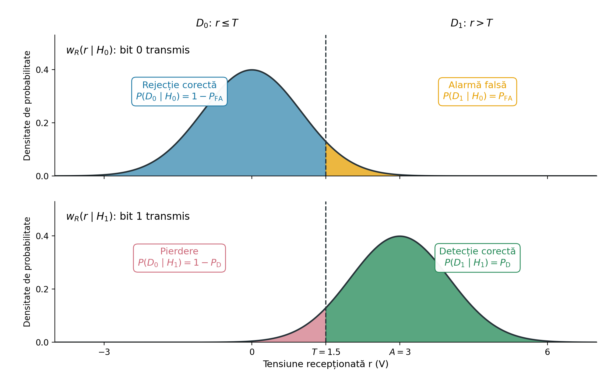
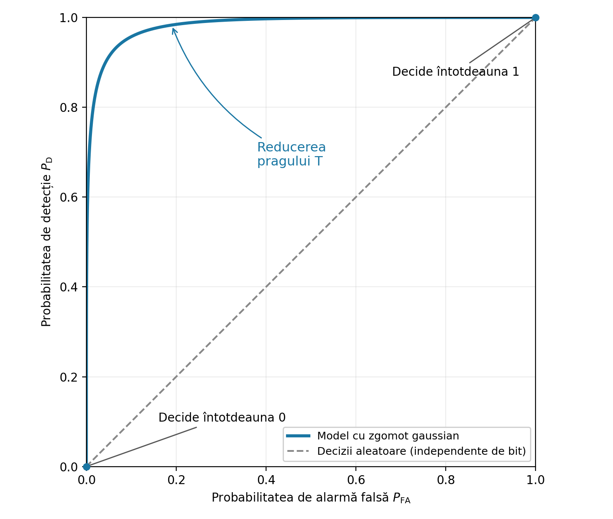

Detecția cu prag și curbele ROC
Laboratorul 6, DEPI
1 Obiectiv
Simularea transmisiei biților folosind două niveluri de tensiune și zgomot aditiv, luarea deciziilor la receptor prin compararea cu un prag și măsurarea detecțiilor și a alarmelor false. Alegerea unui prag pe baza criteriului plauzibilității maxime și reprezentarea unei curbe ROC.
2 Aspecte teoretice
2.1 Decizii binare prin compararea cu un prag
Un emițător poate reprezenta fiecare bit printr-un nivel constant de tensiune:
- bit 0: s=0 V; (sau o altă valoare)
- bit 1: s=A V, unde A>0.
Semnalul este afectat de zgomot aditiv. Receptorul ia câte un eșantion pentru fiecare bit transmis, pentru a lua o decizie. Tensiunea recepționată este:
r=s+n, \tag{1}
unde n este zgomotul aditiv. Cele două ipoteze descriu ce s-a transmis:
- H_0: s-a transmis bitul 0 (s=0 V);
- H_1: s-a transmis bitul 1 (s=A V).
Receptorul nu cunoaște bitul transmis. Receptorul compară r cu un prag T și ia una dintre cele două decizii:
D_1\text{ (decide bit 1) dacă }r>T;\qquad D_0\text{ (decide bit 0) dacă }r\le T. \tag{2}
Ipotezele H_0 și H_1 reprezintă bitul transmis în realitate. Deciziile D_0 și D_1 reprezintă decizia receptorului. Zgomotul poate provoca o decizie greșită.
2.2 Cele patru scenarii posibile
- Rejecție corectă (D_0 \mid H_0): receptorul decide 0 (D_0) când s-a transmis bitul 0 (H_0).
- Alarmă falsă (D_1 \mid H_0): receptorul decide 1 (D_1) când s-a transmis bitul 0 (H_0).
- Pierdere (D_0 \mid H_1): receptorul decide 0 (D_0) când s-a transmis bitul 1 (H_1).
- Detecție corectă (D_1 \mid H_1): receptorul decide 1 (D_1) când s-a transmis bitul 1 (H_1).
Putem calcula probabilitățile (condiționate) ale acestor patru rezultate, pe baza distribuțiilor w(r\mid H_0) și w(r\mid H_1) din Figure 1. Știm să calculăm astfel de probabilități.
- Probabilitatea de rejecție corectă: P_{\mathrm{CR}}=P(D_0\mid H_0).
- Probabilitatea de alarmă falsă: P_{\mathrm{FA}}=P(D_1\mid H_0).
- Probabilitatea de pierdere: P_{\mathrm{M}}=P(D_0\mid H_1).
- Probabilitatea de detecție corectă: P_{\mathrm{D}}=P(D_1\mid H_1).

În practică, aceste valori pot fi estimate dintr-un număr finit de observații, prin numărare.
\widehat{P}_{\mathrm{FA}} = \frac{\text{numărul de alarme false}}{\text{numărul de biți 0 transmiși}} \qquad \widehat{P}_{\mathrm{D}} = \frac{\text{numărul de detecții corecte}}{\text{numărul de biți 1 transmiși}}. \tag{3}
2.3 Criteriul plauzibilității maxime (Maximum Likelihood, ML)
Cum alegem valoarea pragului T, adică cum luăm o decizie pe baza unei tensiuni recepționate r?
Criteriul plauzibilității maxime (Maximum Likelihood, ML) alege ipoteza pentru care funcția densitate de probabilitate are valoarea mai mare în dreptul valorii recepționate r:
- se ia decizia D_1 dacă w_R(r\mid H_1)>w_R(r\mid H_0)
- se ia decizia D_0 dacă w_R(r\mid H_1)\le w_R(r\mid H_0).
În cazul nostru, aceasta înseamnă alegerea pragului T la intersecția celor două densități, aflată la mijloc, după cum se vede în Figure 1.
T_{\mathrm{ML}} = \frac{0 + A}{2}
2.4 Curba ROC
În general, alegerea unui prag T presupune un compromis între alarmele false și detecțiile corecte.
Caracteristica de operare a receptorului (Receiver Operating Characteristic, ROC) este o reprezentare grafică obținută prin variația lui T și reprezentarea celor două mărimi:
- pe axa orizontală: P_{\mathrm{FA}};
- pe axa verticală: P_{\mathrm{D}}.
Fiecare valoare a pragului corespunde unui punct de pe curbă. Proiectantul alege pragul în funcție de cerințele aplicației.
Curba ROC ne indică cât de bine pot fi separate cele două situații, în general.

2.5 Matlab
Generarea unor biți aleatori cu probabilități fixe
Folosiți rand(1,N) pentru a genera N valori uniforme între 0 și 1. Compararea fiecărei valori cu 0.5 produce biți aleatori cu probabilități egale, 50\% pentru 0 și 50\% pentru 1:
N = 20000;
bits = rand(1,N) > 0.5;Pentru a modifica proporțiile, adaptați pragul de comparație. De exemplu, pentru a obține aproximativ 30% zerouri și 70% biți de 1:
bits = rand(1,N) > 0.3;Valorile mai mici sau egale cu 0.3 devin 0; valorile mai mari decât 0.3 devin 1. Deoarece rand() are distribuție uniformă, probabilitățile sunt P(0)=0.3 și P(1)=0.7.
Mai general, rand(1,N) > p0 produce zerouri cu probabilitatea p0 și biți de 1 cu probabilitatea 1-p0.
Tensiuni transmise și recepționate
Înmulțiți vectorul de biți cu A, sau folosiți metode similare, pentru a obține tensiunile transmise.
Folosiți randn(), ca în Laboratorul 3, pentru a genera zgomot gaussian independent și adăugați-l la tensiunile transmise pentru a obține vectorul recepționat r.
Putem separa eșantioanele recepționate în funcție de biții transmiși folosind indexarea logică.
r0 = r(bits == 0);
r1 = r(bits == 1);Reamintire: == testează egalitatea element cu element, iar = atribuie o valoare unei variabile.
Variația pragului pentru curba ROC
Pentru a varia valoarea de prag, creați un vector precum thresholds = -4:0.05:7. Prealocați vectorii de rezultate cu zeros(size(thresholds)), apoi folosiți o buclă for pentru a completa câte un element pentru fiecare prag. Reprezentați curba ROC cu plot(pFA,pD).
2.6 Sinteză: funcții și notații pe care trebuie să le cunoașteți
| Semnătură sau notație | Exemplu | Descriere |
|---|---|---|
rand(1,N) > p0 |
bits = rand(1,N) > 0.3 |
Biți aleatori: probabilitatea p0 pentru 0 și 1-p0 pentru 1 |
A*bits |
s = 3*bits |
Transformarea biților în nivelurile de tensiune 0 și A |
r(bits == 0) |
r0 = r(bits == 0) |
Selectarea eșantioanelor recepționate pentru care bitul transmis a fost 0 |
mu + sigma*randn(1,N) |
3 + randn(1,10000) |
Valori normale cu media mu și deviația standard sigma |
r > T |
decision = r > 1.5 |
Decizii logice: 1 pentru D_1, 0 pentru D_0 |
sum(condition) |
sum(r0 > T) |
Numărarea observațiilor care îndeplinesc o condiție |
numel(x) |
numel(r0) |
Numărul de elemente dintr-un vector |
hold on, hold off, legend(...) |
legend('Bit 0 transmis','Bit 1 transmis') |
Suprapunerea graficelor și identificarea lor |
a:step:b |
-4:0.05:7 |
Praguri candidate cu pas fix |
zeros(size(v)) |
pFA = zeros(size(thresholds)) |
Prealocarea unui vector cu aceleași dimensiuni ca v |
for k = 1:numel(v) |
T = thresholds(k) în interiorul buclei |
Parcurgerea fiecărui prag după indice |
plot(x,y) |
plot(pFA,pD) |
Reprezentarea probabilității de detecție în funcție de probabilitatea de alarmă falsă |
3 Exercițiu teoretic
Un emițător transmite bitul 0 ca 0 V și bitul 1 ca 3 V. Eșantionul recepționat este r=s+n, unde zgomotul are distribuția normală \mathcal{N}(0,1), cu tensiunile exprimate în volți. Receptorul decide D_1 dacă r>T, și D_0 în caz contrar.
Calculați probabilitățile teoretice de alarmă falsă și de detecție corectă:
Desenați distribuția lui r pentru fiecare ipoteză, w(r|H_0) și w(r|H_1).
Care este valoarea lui T pentru regula de decizie a plauzibilității maxime (ML)?
Calculați probabilitatea de alarmă falsă P_{\mathrm{FA}} și probabilitatea de detecție P_{\mathrm{D}} pentru pragul ML.
4 Exerciții Matlab
Scrieți comenzile într-un script sau într-un live script.
Simulați transmisia folosind două niveluri de tensiune:
Folosiți A=3 V. Canalul adaugă zgomot gaussian independent, cu media 0 V și deviația standard de 1 V, la fiecare tensiune transmisă. Astfel, eșantioanele recepționate au distribuția \mathcal{N}(0,1) pentru H_0 și \mathcal{N}(3,1) pentru H_1, cu tensiunile exprimate în volți. Fiecare eșantion conduce la o decizie asupra unui bit.
Generați un vector linie
bitscu 20000 de biți aleatori 0 și 1, cu probabilități egale. Folosițirand()și comparați valorile cu un prag potrivit.Transformați
bitsîntr-un vectorsde tensiuni transmise, folosind 0 V pentru bitul 0 și 3 V pentru bitul 1.Generați un vector de zgomot de aceeași dimensiune, cu distribuția normală \mathcal{N}(0,1), și creați vectorul recepționat
r = s + n.Rulați codul de mai jos pentru a estima cele două densități condiționate. Poate un prag să separe corect toate eșantioanele recepționate?
% Selectarea eșantioanelor recepționate după bitul transmis r0 = r(bits == 0); % Ce face această linie? r1 = r(bits == 1); % Ce face această linie? % Aceleași limite ale intervalelor pentru ambele histograme edges = -4:0.25:7; figure histogram(r0, edges, 'Normalization', 'pdf', ... 'FaceColor', [0 0.45 0.74], 'FaceAlpha', 0.5) hold on histogram(r1, edges, 'Normalization', 'pdf', ... 'FaceColor', [0.85 0.33 0.10], 'FaceAlpha', 0.5) hold off xlabel('Tensiune recepționată (V)') ylabel('Densitate de probabilitate estimată') legend('Bit 0 transmis', 'Bit 1 transmis')Alegeți din histograme un prag T potrivit pentru a separa cele două distribuții. Ce se întâmplă cu alarmele false și pierderile când pragul crește? Dar când scade?
Evaluați praguri individuale:
Setați
T = 1.5. Calculați vectorul deciziilordcomparând valorile dinrcu pragul. Fiecare element dindtrebuie să fie 1 (D_1) dacă tensiunea recepționată este mai mare decâtT, și 0 (D_0) în caz contrar. Vectoriibits,rșidtrebuie să aibă aceeași dimensiune.Comparați
dcu vectorul transmisbitsși numărați cele patru rezultate posibile:- rejecții corecte: bitul transmis este 0 și decizia este 0;
- alarme false: bitul transmis este 0, dar decizia este 1;
- pierderi: bitul transmis este 1, dar decizia este 0.
- detecții corecte: bitul transmis este 1 și decizia este 1;
Folosiți
==pentru a testa egalitatea,&pentru a combina două condiții logice element cu element șisum()pentru a număra pozițiile care îndeplinesc ambele condiții. Puneți fiecare comparație între paranteze.Numărați biții 0 și 1 transmiși și salvați numerele în
N0șiN1. Verificați că alarmele false plus rejecțiile corecte dauN0, iar detecțiile corecte plus pierderile dauN1.Estimați probabilitatea de alarmă falsă
pFAîmpărțind numărul alarmelor false laN0. EstimațipDîmpărțind numărul detecțiilor corecte laN1, iar probabilitatea de pierdere împărțind numărul pierderilor laN1. Verificați că probabilitățile de detecție și de pierdere au suma 1.Pentru
T = 1.5, comparațipFAșipDcu rezultatele teoretice din exercițiul teoretic. De ce estimările nu sunt exact egale cu valorile teoretice?Calculați numărul total de erori ca suma alarmelor false și a pierderilor. Verificați-l numărând pozițiile în care
ddiferă debits, folosind~=(diferit).Repetați pentru
T = 1șiT = 2, folosind aceiași vectoribitsșir. Notați rezultatele într-un tabel cu câte un rând pentru fiecare prag și coloane pentruT,pFA,pDși numărul total de erori. Comparați cu predicția de la Exercițiul 1.
(Optional) Reprezentați curba ROC:
Creați vectorul
thresholdscu praguri candidate de la -4 la 7, cu pasul 0.05.Completați șablonul de mai jos pentru a calcula
pFAșipDpentru fiecare prag. Înlocuiți fiecare...cu expresia potrivită, folosind metoda de numărare din Exercițiul 2. Nu generați zgomot nou în interiorul buclei.pFA = zeros(size(thresholds)); pD = zeros(size(thresholds)); for k = 1:numel(thresholds) T = thresholds(k); % Calcularea deciziilor pentru eșantioanele recepționate d = ...; % Compararea deciziilor cu biții transmiși și numărarea rezultatelor falseAlarms = ...; correctDetections = ...; % Împărțirea la numărul de eșantioane pentru bitul transmis corespunzător pFA(k) = ...; pD(k) = ...; endReprezentați vectorul
pDîn funcție depFA.
5 Întrebări finale
- Dacă toate tensiunile recepționate cresc cu 10 V, cum trebuie modificat pragul pentru a păstra toate deciziile neschimbate? S-ar modifica curba ROC?
- Poate un detector să nu producă nicio alarmă falsă în 10000 de eșantioane simulate pentru bitul 0 transmis, deși probabilitatea sa reală de alarmă falsă este pozitivă?
- Un receptor decide întotdeauna D_0 (bit 0). Care sunt probabilitățile sale de detecție și de alarmă falsă? Unde se află punctul său pe curba ROC? Dar dacă decide întotdeauna D_1?